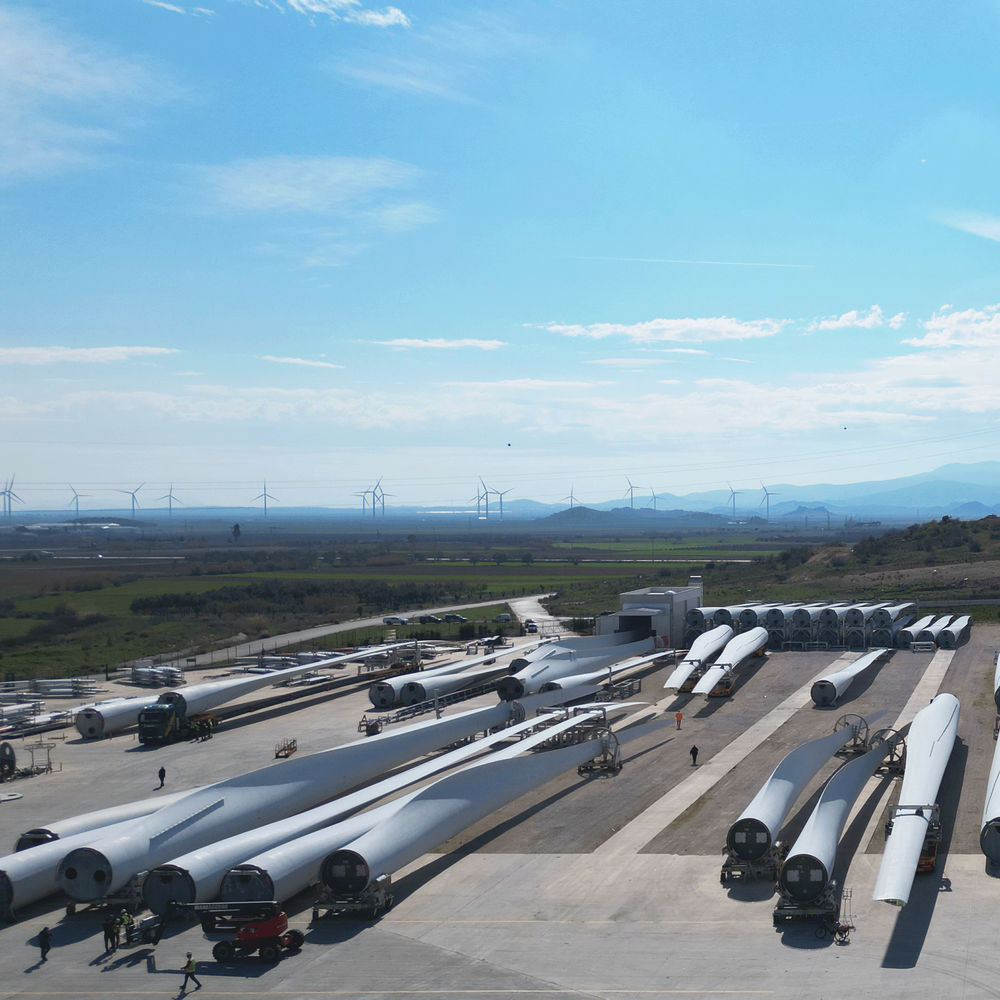
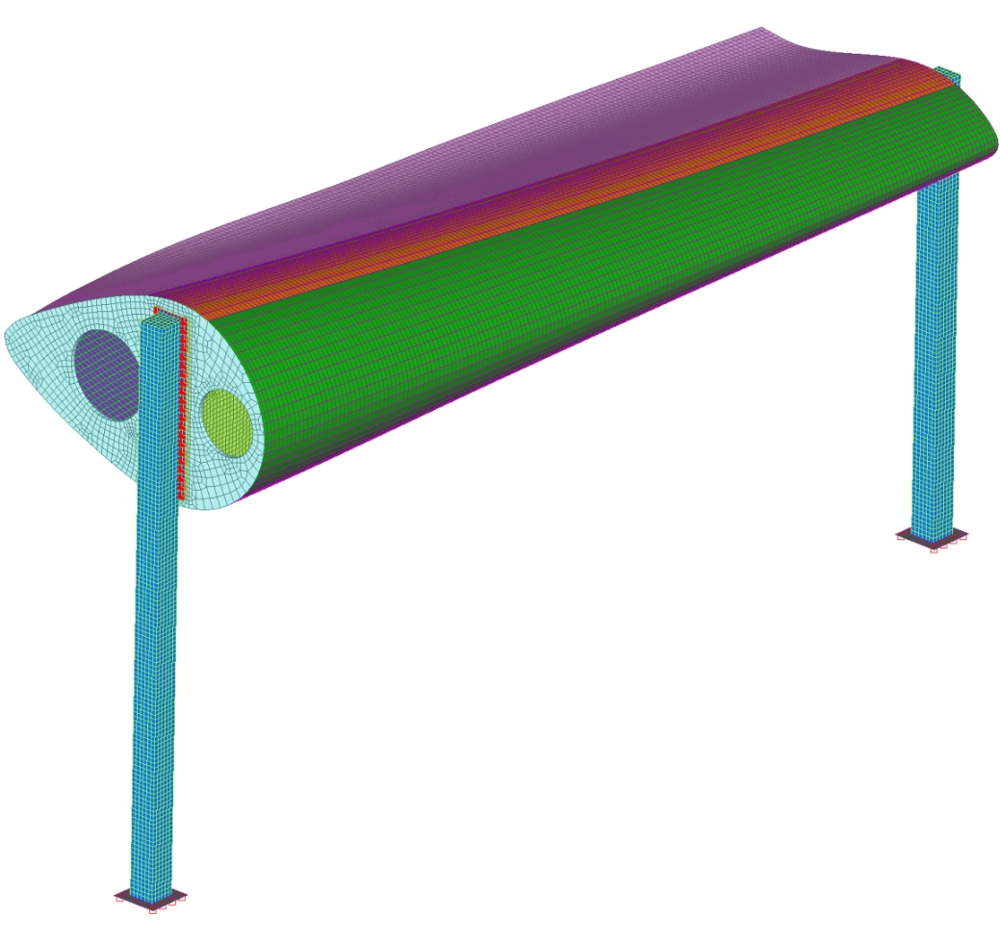
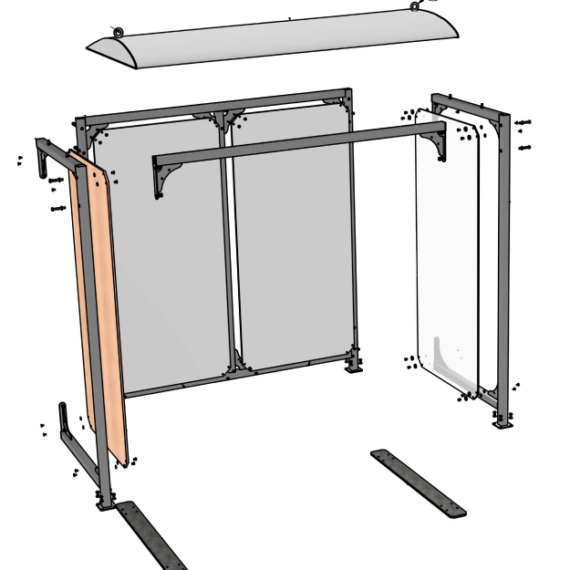
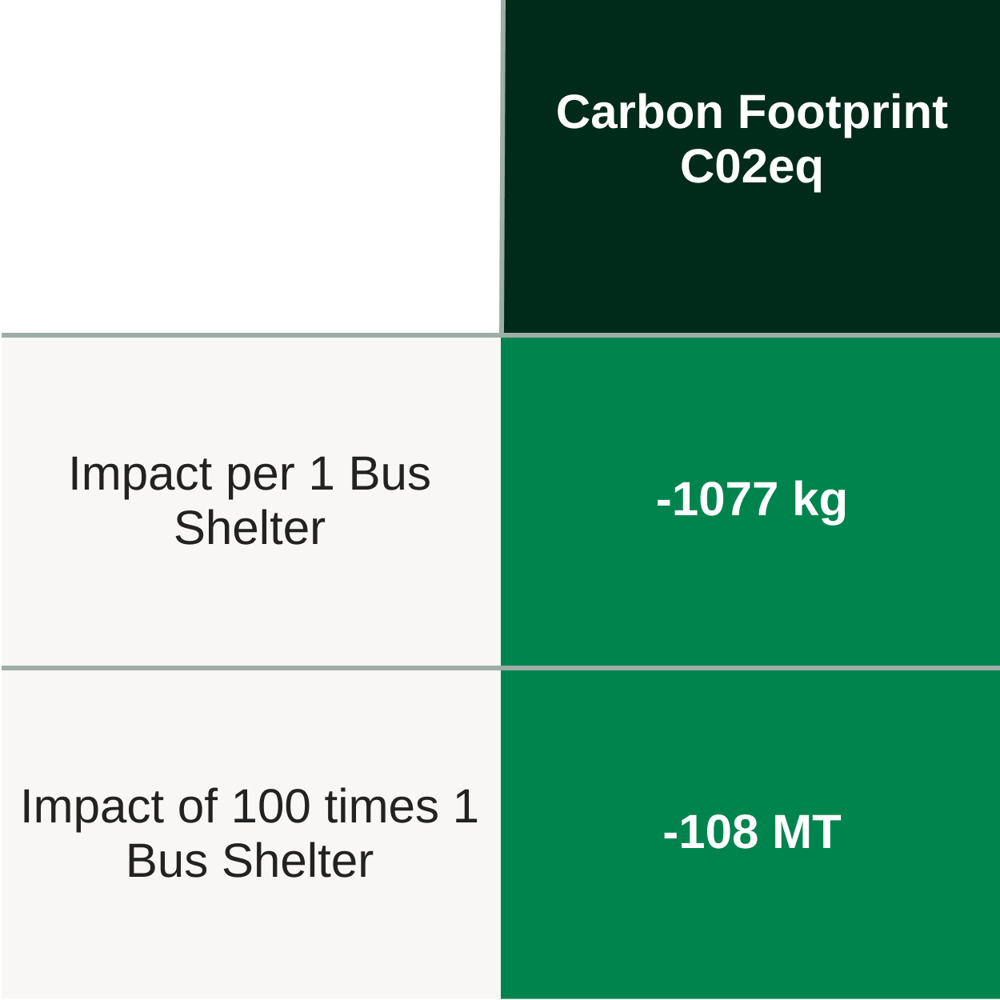
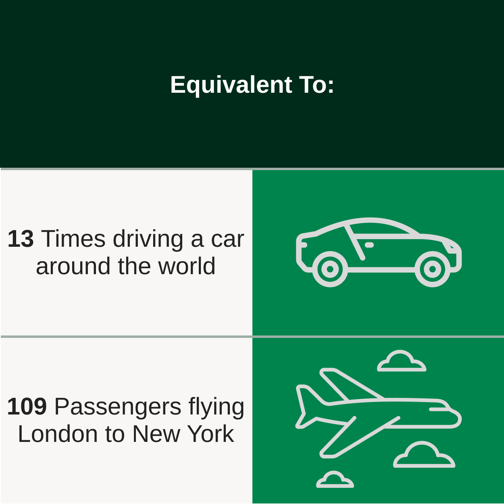
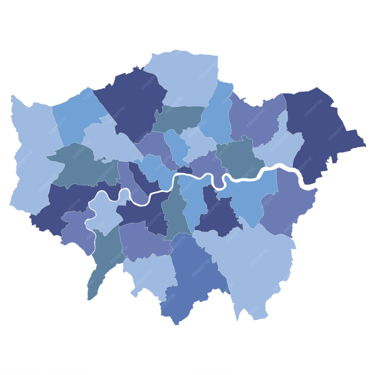
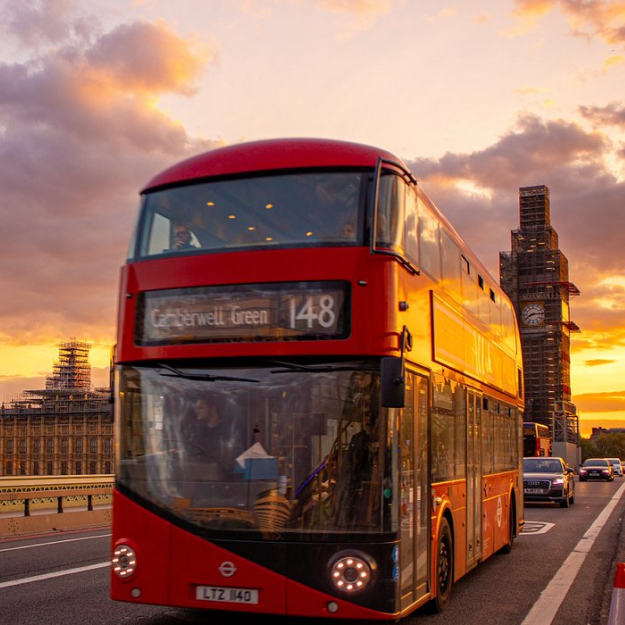
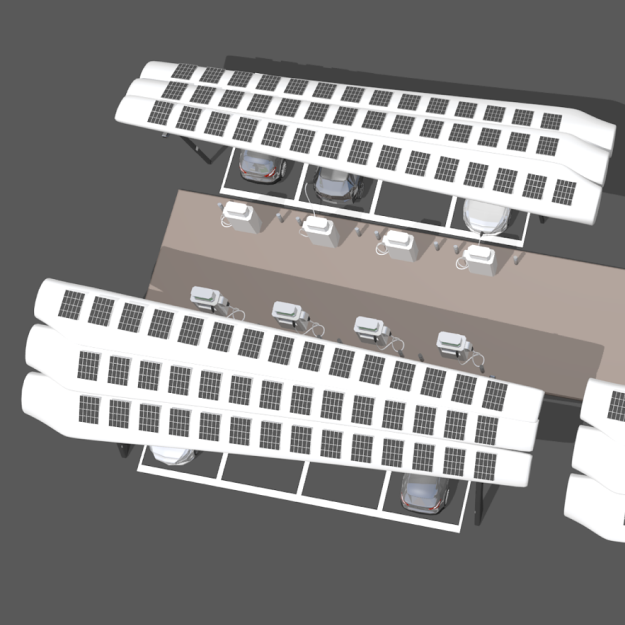
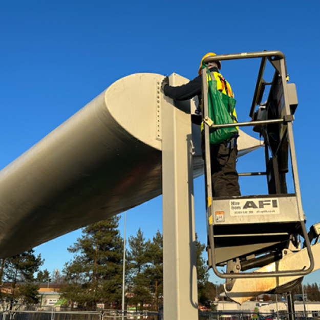

-
The wind turbine blades used to create this bus shelter came from
a UK windfarm, a site in County Durham. The four turbines
have a generating capacity of 8MW, powering up to 4000 homes concurrently.
Over a 25 year life in operation this blade has powered 365,000 homes every year.
Due to the extreme stresses, wind turbine blades may have to be retired -
this one displays the benefits of repurposing and circular economy in it's second life.
- Blade Factory
 UK Wind Farm
UK Wind Farm
- FEA
- Concept
-
Using our patented material handling approach and knowledge of
wind turbine blades, we engineered a shelter that conforms
to eurocode loading standards for public realm infrastructure.
All of our blade material undergoes validity testing to ensure the
original material properties meet safety standards.
-
We complete in depth Life Cycle Assessements on all of our repurposed items,
they inform our designs and ensure that the maxiumum carbon saving can be
achieved. By comparing our shelter to a typical UK bus shelter design, we can
save 1077kg of C02eq per shelter. Mitigating the need for the processing of raw
materials and waste handling for the blade material.
- LCA
- Carbon Equivalents
- Transport for London Area
- London Bus
-
There are nearly 14,000 bus shelters in the transport for London (TFL) area alone,
if we take the population of the TFL area at 8.8 million then we can estimate there are around
100,000 bus shelters in the UK. If 30% were in need of replacement,
then we could save 32,000 Tonnes of C02 equivalent by using repurposed shelters.
-
These shelters can be implemented with smart features including sensors to provide
timetable information and seat availability on buses. Integration is planned
with solar technology to power lighting, security and IoT sensing systems on our shelters.
- Solar Panel Concept
- Enhancement Retrofits